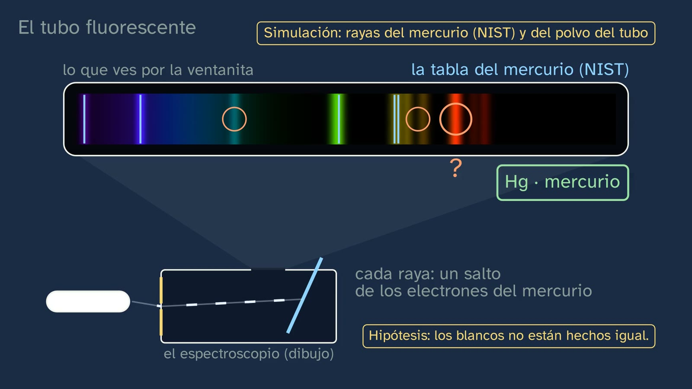
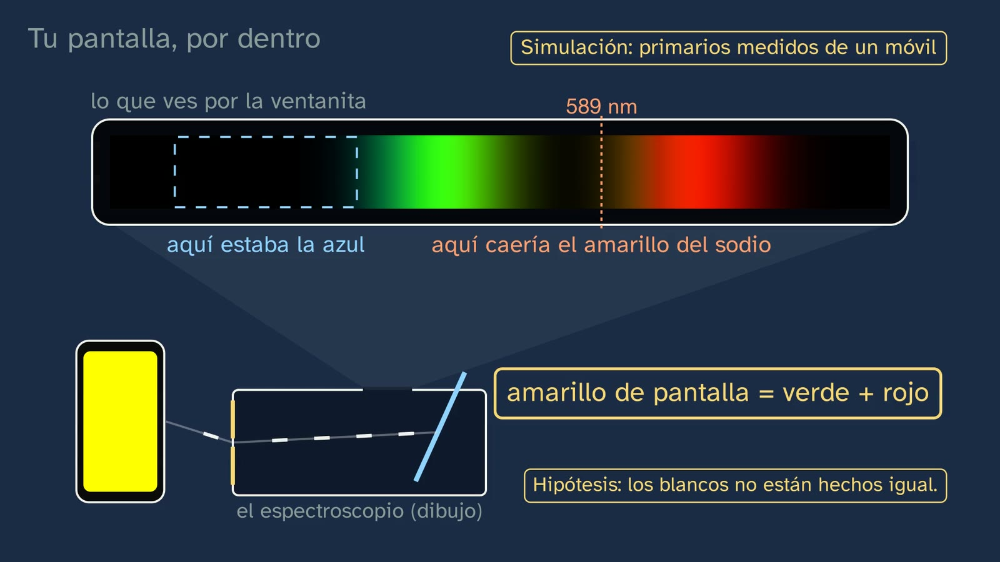
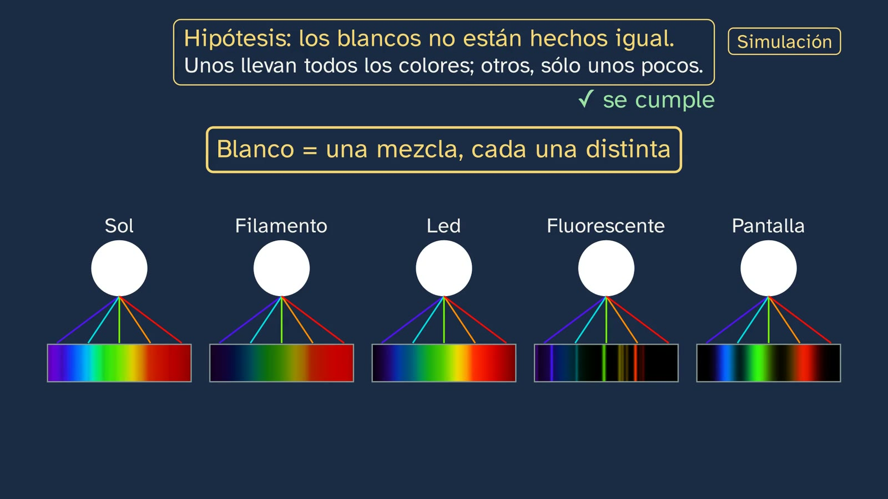

A spectroscope at home
In a nutshell
This is the lab class that puts to work what class 3 explained: a very hot solid gives a continuous spectrum, and a low-density gas, lines. The instrument is a CD, which is a diffraction grating. The class has a single thread, built from things students have close at hand: their screen, a CD, the lights in their home, sunlight and their own eye. It starts by recalling the two kinds of spectrum and correcting the three exercises from class 3. The hook is a claim students can feel in front of the screen: there isn't a single yellow dot on your screen.
Then, why a disc splits light. The track of a CD is shown under an electron microscope, with its turns 1.6 µm apart, and a real human hair at the same scale: it measures 57 µm and 36 turns fit across it. In a wave simulation, the little waves from each turn reinforce each other only in certain directions, and each colour in its own. Red comes out at a wider angle because, to reinforce, the little wave from one turn has to arrive one wavelength behind its neighbour's, and with a longer wave that means looking further to the side.
The box spectroscope is drawn, the same one throughout the class. With it, the lights at home are examined:
- the filament, which adds colours as it heats up;
- the LED, a blue LED (Nobel Prize 2014) with a yellow powder;
- the fluorescent tube, whose lines match NIST's table for mercury.
Next come the screen (three bands; its yellow is green plus red, and where sodium would fall there is a gap), the eye (three cones that receive the same from sodium light as from the screen's mixture) and the Sun, without ever looking at it (the disc acts as a mirror): a continuous spectrum, like the filament's, crossed by the Fraunhofer lines. It ends with the typical mistake ("white is a colour of the rainbow") and an open question: would your screen fool a four-cone eye, like that of many birds?
What you see is real, or it is said to be calculated. The photos are from Wikimedia Commons, under free licences and with their author on screen. Whatever is labelled Simulación (simulation) is calculated from measured, published spectra (see "What the class simplifies, and why").
For readers outside Spain: the Bachillerato is the last two years of secondary school (ages 16–18), and ESO is the compulsory stage before it (ages 12–16). The video is in Spanish, with English subtitles; its on-screen labels keep their Spanish text. In Spain the decimal separator is a comma (1,6 means 1.6); this English sheet uses points, and writes powers of ten with × (3.38 × 10⁻¹⁹, which the board writes as 3,38·10⁻¹⁹). The voice speaks of the CD's vueltas, the turns of its spiral track; a rendija is the slit, and the ventanita, the little window you look through. An energy-saving bulb (bajo consumo) is a compact fluorescent lamp.
Curriculum
Spain's Royal Decree 243/2022, Physics and Chemistry (consolidated text in the Official State Gazette, BOE). Our translation of the official Spanish text.
- Core knowledge (block A): "Electronic structure of atoms after analysing their interaction with electromagnetic radiation: explanation of the position of an element in the periodic table and of the similarity in the properties of the chemical elements of each group."
- Specific competences: SC1 (explaining everyday phenomena with laws and theories), SC2 (formulating and validating hypotheses through experimentation and the search for evidence) and SC3 (units, formats and interpreting information; safety in experimental work).
- Assessment criteria:
- 1.1: the lights at home, explained with the theory from class 3.
- 2.1: a hypothesis ("whites are not all made the same") put to the test with each light.
- 2.2: two methods for the same question: the simulation and the real photo, through a handheld spectroscope, of the filament and the energy-saving lamp; the spectroscope and the photo of the subpixels for the screen's yellow.
- 3.3: reading spectra and tables of wavelengths.
- 3.4: safety: never at the Sun, not even looking only at the disc, because it acts as a mirror; the craft knife, with an adult.
How the class is built
Video chapters
About sixteen minutes (16:24), in eleven chapters. It follows the department's model: predict, observe and explain, with a lab hypothesis that is recalled after each piece of data.
| Chapter | What happens | Why this way |
|---|---|---|
| What we'll see (0:00) | Abril says hello; the map of the topic. The previous class promised that students would build the spectroscope: at home it doesn't work first time, so today it is shown here, with real photos, simulations and the build for keen makers. | Keeping the promise by telling the truth. |
| What you already know (0:39) | What spectrum does a very hot solid give? And a low-density gas? Pause. Continuous, and emission. | Recalling what is looked for today. |
| Solutions to the previous class (1:24) | The sodium photon (3.38 × 10⁻¹⁹ J), sodium against lithium, and 434 nm (from 5 to 2). | Brief, and each with its question. |
| Not a single yellow dot (2:30) | The hook: a (drawn) magnifying glass inside the yellow shows little red and green dots. How can that be? With a CD, which splits light like Bunsen and Kirchhoff's prism. The hypothesis. | A surprise students have right in front of them. |
| What a CD hides (3:22) | The track under the electron microscope (1.6 µm between turns) and, zooming out at the same scale, a real hair (57 µm, 36 turns). The spiral unwound (more than 20,000 turns, 5.4 km). Wave simulation: far away, only the beams in which the little waves reinforce each other are left; red, at a wider angle, and why: one wavelength of delay between neighbouring turns. The angle measures the wavelength. | So that the size can be felt, and the wave idea from class 3 explained from the inside. The formula, d·sin θ = λ, is left for year 2. |
| A disc spectroscope (5:47) | The box spectroscope, drawn piece by piece: box, tilted disc, slit, little window; if light gets in through a hole, a veil of colours covers everything. For keen makers, the build step by step. | A single design throughout the class, and a single disc: the CD. |
| The lights in your home (7:12) | A prediction with three lights that look the same white. The filament: a dimmer heats it and the spectrum grows from the red. The LED: the blue chip on its own and, once the powder covers it, the band from green to red. The fluorescent tube: its lines match NIST's table for mercury; the red one comes from the powder, which turns ultraviolet into light. A real photo of the filament and of an energy-saving fluorescent lamp. | The data, one by one, with what they say about the hypothesis. |
| Inside your screen (10:21) | The phone's white, three bands; a real photo through a grating. A prediction with yellow (10:55): the blue goes out and at 589 nm there is a gap. The phone runs through the colours and the bands do not move. Real photos of the subpixels. The eye: three cones; sodium light and the green-plus-red mixture reach them the same way. | What nobody tells you: the screen works because the eye has only three sensors; every rainbow on a screen is an imitation. |
| Sunlight (12:49) | What class 3 promised: how to look at it safely (at the sky, at a cloud or at a wall in the sun; never at the Sun, because the disc acts as a mirror). A continuous spectrum, like the filament's, with the Fraunhofer lines: with a CD, the strongest ones (sodium and magnesium); at higher resolution, thousands. | What is fundamental in the topic, with the light that is always there. |
| The mistake (13:48) | "White light is one more colour of the rainbow": five whites (Sun, filament, LED, fluorescent tube and screen) open out into five different mixtures. The hypothesis holds. | The typical mistake, taken apart with the class's own data. |
| Practice and keep thinking (14:35) | Recap, three exercises, the open question and the next class. | The solutions open class 5. |





Bridges with other subjects. Year 2 Physics: the diffraction grating with numbers (d·sin θ = m·λ). Biology: colour vision (three kinds of cones; metamerism; the four cones of birds). Technology and Digitalisation: how screens make colour (RGB, OLED and LCD).
A plan for a 50-minute lesson
- Before the video (5 min). The questions in "Before watching the video" on the student worksheet. Everyone says what they think they will see if they look at a white screen with a CD.
- The video, in sections (22 min; it lasts about 16). Pause at each prediction (around 0:50, 7:37 and 10:55) and at "What matters so far" (10:12).
- The activity (18 min). The box spectroscope, already built by the teacher, or the IAC build (see "A classroom activity"): look at the classroom's fluorescent tube and, if it is daytime, at the sky through the window.
- Wrap-up (5 min). The three exercises and the open question, for homework.
What the class simplifies, and why
- Why a disc splits colours. With waves that reinforce or cancel and with a delay of one wavelength between two neighbouring turns; the grating equation and the higher orders are left for year 2. The wave simulation (labelled) adds up the waves from twelve turns close to the disc and, far away, draws all the beams for a CD's real track spacing, with the width of sixteen turns: with green light, the central one and three on each side (19°, 42° and 84°). The spectroscope uses the first; the others are the higher orders. The fan of the first, with the light head-on, from 400 to 650 nm: from 14.5° to 24.0°.
- The filament heating up. Planck's law at each temperature. The viewer adjusts its brightness to the light it receives, as the eye does, so that you can see which colours are there; the thermometer shows the real temperature.
- The simulations. Calculated in
espectros.py, with the colour of each wavelength from the CIE 1931 functions and at a CD's resolution (about 4 nm, with a 0.5 mm slit at about 17.5 cm): - filament: Planck's law;
- LED: the median of 304 measured warm-white LEDs (PhotoLED, DTU, CC BY 4.0), with the blue peak separated from the rest;
- fluorescent tube: NIST's mercury lines and those of the phosphors in a triphosphor tube, with approximate intensities;
- screens: the primaries with the published peaks and widths (Chen et al., 2018);
- sky: Kurucz's solar spectrum (2005), at 0.1 nm;
- cones: the template curves of Govardovskii et al. (2000), with peaks at 420, 530 and 560 nm; those of a bird, at 370, 445, 505 and 565 nm (a drawing).
- Screens are not all the same. In OLEDs (most phones) yellow is two bands with a gap at 589 nm; in LCDs with a yellow-phosphor (YAG) white LED, the band from green to red is almost continuous and there is some light at 589 nm, but no line like sodium's. What holds for all of them: they have no yellow subpixel.
- The fluorescent tube's red line. It comes from the europium in the powder; that a solid gives such a narrow line is because its 4f electrons are shielded by the 5s and 5p shells. The class does not go into this; shells arrive in class 5.
Typical mistakes and how they are handled
- "White light is one more colour of the rainbow." White has no place in the rainbow: there is no white wavelength. Five whites and five different mixtures.
- "The CD has the colours." The disc does not paint: it separates the colours the light brings. With light of a single colour, it only sends back that colour.
- "An LED gives lines because it's electronic." Its light comes from a blue chip and from a powder, a solid that glows in many colours in a row: continuous.
- "The eye measures wavelength." It has only three kinds of cones; two different lights that excite them equally look the same colour.
Questions and solutions
The ones in the video
- What spectrum does a very hot solid give? And a glowing low-density gas? — Continuous; emission (lines).
- Which of the three lights at home will give lines? — The fluorescent tube.
- When yellow is put on the screen, will a yellow line like sodium's be seen? — No: green and red, with a gap where sodium would fall.
Practice (the solutions open class 5)
- Three strips, A, B and C: a lithium flame, a fluorescent tube and a filament bulb, in a different order. Which is which, and how do you know? — A, lithium: a single red line (670.8 nm), that of a gas. B, the fluorescent tube: lines from mercury and from its powder. C, the filament: a continuous spectrum, that of a very hot solid.
- Mercury's green line, 546.1 nm: the energy of each photon? — 546.1 nm = 5.461 × 10⁻⁷ m; E = 6.63 × 10⁻³⁴ · 3.00 × 10⁸ / 5.461 × 10⁻⁷ = 3.64 × 10⁻¹⁹ J (with the exact constants, also 3.64 × 10⁻¹⁹ J).
- What makes red leave the disc at a wider angle than violet? — For the waves from two neighbouring turns to reinforce, one has to arrive exactly one wavelength behind the other. Red's wave is longer, and that larger delay can only be achieved by looking further to the side: it comes out at a larger angle (about 24° against about 15° with a CD).
The open question. Many birds have four kinds of cones, one of them sensitive to ultraviolet or violet. A three-colour screen does not produce ultraviolet, and the mixture that, for us, matches sodium's yellow need not excite four cones in the same way: the bird is probably not fooled, or sees the screen's colours differently. It opens a discussion of metamerism, of why three primaries are enough for the human eye and of how the vision of other animals is studied (Stoddard et al., 2020, PNAS).
A classroom activity
The box spectroscope (Wakabayashi and Hamada, 2006). A tissue box; a 0.5 mm slit at one end; a slot in the lid that takes the whole disc, tilted about 50° to the bottom of the box; a little window above the disc and a black paper mask against stray light. In skylight, the strongest Fraunhofer lines can be seen.
The IAC spectroscope (Rodríguez Eugenio and Doran). A cardboard tube, a piece of CD with its reflective layer removed as a transmission grating, and a card slit; in the classroom, with the teacher (it needs a craft knife and peeling the disc).
Suggestion: look at the classroom's fluorescent tube and identify the mercury lines with NIST's table; and, in daytime, the sky through the window (never the Sun).
Safety. Never point it at the Sun, not even if you only look at the disc: it acts as a mirror and sends sunlight into the eye; if the light bothers you, look away; the craft knife, with an adult.
Open resources
- NIST Atomic Spectra Database: the lines of any element, free. https://physics.nist.gov/PhysRefData/ASD/lines_form.html
- Strong lines of mercury (NIST): https://physics.nist.gov/PhysRefData/Handbook/Tables/mercurytable2.htm
- PhotoLED (DTU): 1494 measured LED spectra, CC BY 4.0. https://doi.org/10.11583/DTU.12783389
- Köppen (University of Kiel): the spectrum of the Sun and of street lamps with a CD. https://portia.astrophysik.uni-kiel.de/~koeppen/spectro/sune.html
- The IAC workshop (in Spanish): https://outreach.iac.es/peter/wp-content/uploads/2026/05/Taller_construir_espectroscopio_PETeR.pdf
- Science in School (CERN): a spectrometer made from a cereal box. https://scienceinschool.web.cern.ch/wp-content/uploads/2014/11/issue4_spectrometer.pdf
What the class leaves out, and why
- The grating equation and the higher orders: they belong to year 2 Physics (the simulation shows them, without naming them).
- The DVD: its turns, closer together (0.74 µm), spread the colours further, but comparing discs did not move the lab forward; the class sticks with the CD. In the classroom, a single-layer DVD gives a wider spectrum.
- Street lamps: class 3 promised to look for lines "in your street", but the channel does not suggest going outside (ADR-128); the sky is looked at from a window.
- Measuring wavelengths with the disc: it requires measuring angles carefully; it stays as an idea ("a disc is a ruler for measuring light") and as an extension for the classroom.
Sources
- F. Wakabayashi and K. Hamada (2006), "A DVD Spectroscope: A Simple, High-Resolution Classroom Spectroscope", J. Chem. Educ. 83(1), 56–58, doi:10.1021/ed083p56.
- J. J. Garrido-González, M. Trillo-Alcalá and A. J. Sánchez-Arroyo (2018), "Lights, Camera, Spectroscope! The Basics of Spectroscopy Disclosed Using a Computer Screen", J. Chem. Educ. 95(5), 903–907, doi:10.1021/acs.jchemed.7b00763.
- Ecma International, ECMA-130 (CD).
- MSSL (University College London), CD Spectrometer, and NASA, Here Comes the Light: never at the Sun.
- NIST, strong lines of mercury and Atomic Spectra Database.
- H.-W. Chen et al. (2018), Light: Science & Applications 7, 17168 (screens).
- A. M. Srivastava and T. J. Sommerer (1998), "Fluorescent Lamp Phosphors", The Electrochemical Society Interface 7(2), 28–31.
- V. I. Govardovskii et al. (2000), Visual Neuroscience 17, 509–528 (template curves of the cones); M. C. Stoddard et al. (2020), PNAS 117(26) (bird vision).
- Nobel Prize in Physics 2014 (Akasaki, Amano and Nakamura): nobelprize.org.
- EMPIR 15SIB07 PhotoLED (DTU, 2021); R. L. Kurucz (2005), solar irradiance.
About this class
Script written by Claude (Anthropic), checked in two sources by a separate agent and reviewed with the channel's rubric; remade on 18/10/2026 in the moving style (ADR-129). Whiteboard with Manim; synthetic voice from Microsoft Azure. The photos, from Wikimedia Commons, with their licence on screen and in the description. This English version was translated by the same AI and reviewed by a person.
How to cite this sheet
GinCol Lab (2026). A spectroscope at home. GinCol Lab teacher sheet: Physics and Chemistry · 1st year of Bachillerato · The atom and the periodic table · Class 4 of 6. https://gincollab.github.io/aula/en/fisica-y-quimica/t01-c4/. CC BY 4.0.
GinCol Lab teacher sheet · CC BY 4.0 · Source and errata